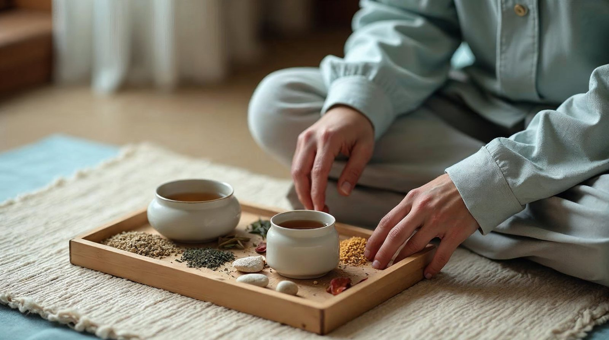
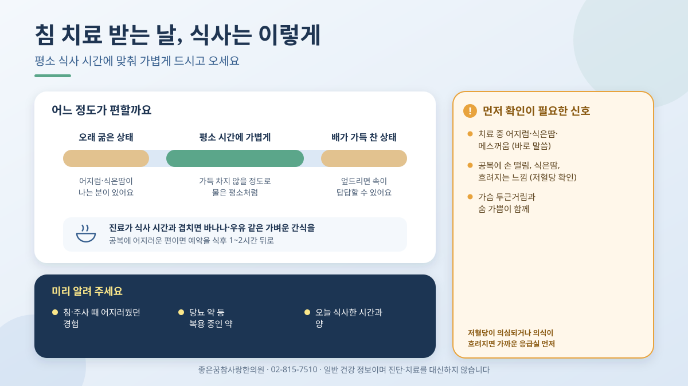

이종호 한의사 감수좋은꿈참사랑한의원 대표원장 (한의사 면허번호 19769)발행 2026-11-23 · 수정 2026-11-26
이 글의 차례
침 치료를 받으러 오는 날에는 평소 식사 시간에 맞춰 가볍게 드시고 오시는 것이 가장 편합니다. 오래 굶은 상태나 배가 가득 찬 상태는 모두 치료 중 어지럼이나 속 불편으로 이어질 수 있기 때문입니다. 진료 시간이 식사 시간과 겹친다면 가벼운 간식을 챙겨 두시면 됩니다.
왜 식사 상태가 중요할까요
- 오래 공복이면 긴장한 상태에서 침을 맞을 때 어지럽거나 식은땀이 나는 분이 있습니다.
- 과식 직후에 엎드려 치료를 받으면 속이 답답하거나 메스꺼울 수 있습니다.
- 침이나 주사를 맞을 때 어지러웠던 경험이 있는 분은 공복일 때 더 조심해야 합니다.
- 사람마다 편한 정도가 달라 평소 식사 리듬을 기준으로 정하는 것이 좋습니다.
- 엎드리거나 배를 대고 눕는 자세는 위가 눌리기 쉬워, 먹은 양과 먹은 시각이 함께 영향을 줍니다.
먼저 이렇게 여쭙니다
- 마지막으로 식사한 시각과 어떤 음식을 드셨나요?
- 평소 식사를 거르는 일이 잦은가요?
- 침이나 주사를 맞을 때 어지럽거나 식은땀이 난 적이 있나요?
- 당뇨약을 드시거나 공복에 손이 떨린 적이 있나요?
- 오늘 커피나 에너지 음료를 빈속에 드셨나요?
일상에서 먼저 해 볼 수 있는 것
- 평소 식사 시간에 맞추되 배가 가득 차지 않을 정도로 드시기
- 진료 시간이 식사 시간과 겹친다면 바나나나 우유 같은 가벼운 간식 챙기기
- 물은 평소처럼 편하게 마시기
- 공복에 어지러운 편이라면 예약 시간을 식후 1~2시간 뒤로 잡기
- 기름진 음식이나 매운 음식으로 배를 가득 채운 직후라면 조금 쉬었다가 오기
- 진료 직전에 화장실을 다녀와 아랫배가 편한 상태로 눕기

예를 들면 이런 경우입니다
- 예를 들어 점심시간에 짬을 내 오는 직장인이라면, 평일 13:00~14:00 점심시간에는 진료가 쉬므로 오전 진료 끝 무렵이나 14:00 이후로 잡고, 그 전에 샌드위치나 주먹밥처럼 가벼운 식사를 미리 해 두는 편이 편합니다.
- 예를 들어 아침을 거르고 등교하거나 출근하는 습관이 있는 분이 오전 9시 반 진료를 잡았다면, 우유 한 잔이나 바나나 하나라도 드시고 오시면 치료 중 어지럼을 줄이는 데 도움이 됩니다.
- 예를 들어 당뇨약을 드시거나 인슐린을 쓰시는 어르신이라면, 평소처럼 식사와 약을 챙기고 오시되 진료 시간이 식사 시간과 겹치면 사탕이나 작은 간식을 가방에 넣어 두시고 접수 때 약 이름을 알려 주세요.
한의원에서 함께 살필 수 있는 경우
- 식사를 거르면 어지럽거나 손이 떨리는 느낌이 있을 때 식사 리듬을 함께 여쭙니다.
- 치료 중 속이 불편해진 일이 있었다면 그때의 상황을 함께 살핍니다.
- 침이 처음이라 긴장되는 분은 자세와 진행 속도를 함께 정합니다.
좋은꿈참사랑한의원에서는 치료 전에 식사 여부와 그날 컨디션을 여쭙고, 필요하면 누운 자세로 바꾸거나 치료 방법을 조정합니다. 치료 중 불편하면 언제든 멈출 수 있으며, 귀가 전에는 그날 지켜볼 점을 알려 드립니다. 빈속으로 오신 것을 치료 직전에 알게 되면 잠시 쉬며 물을 드시게 한 뒤 시작하기도 합니다.
자주 하는 오해
- 침은 빈속에 맞아야 더 잘 듣는다고 여기는 분이 있지만, 빈속은 오히려 어지럼이나 식은땀으로 이어지기 쉬워 권하지 않습니다.
- 먹고 바로 오면 안 된다고 생각해 일부러 굶고 오는 분도 있는데, 가볍게 드시고 오시는 편이 더 편합니다. 많이 드신 직후만 피하시면 됩니다.
- 예전에 한 번 어지러웠던 일은 대수롭지 않다고 넘기기 쉽지만, 자세와 침 개수를 정하는 데 꼭 필요한 정보라 말씀해 주세요.
- 한약을 먹는 중이면 침 전에 따로 굶어야 하느냐고 묻는 분도 있는데, 평소 복용 시간대로 드시고 진료 때 알려 주시면 됩니다.
스스로 점검해 보세요
- 오늘 마지막으로 식사한 시각을 말할 수 있다
- 4~5시간 넘게 아무것도 먹지 않았다
- 방금 배가 부를 만큼 많이 먹었다
- 예전에 침이나 주사, 채혈 때 어지럽거나 식은땀이 난 적이 있다
- 당뇨약이나 혈압약처럼 식사와 관련된 약을 먹고 있다
- 빈속에 커피를 마시고 왔다
- 어젯밤 잠을 거의 못 잤다
해당하는 항목이 있다면 접수나 치료 시작 전에 짧게 말씀해 주세요. 그날 자세와 치료 범위를 정하는 데 바로 참고합니다.
이렇게 기록해 오시면 상담이 쉬워집니다
- 진료 당일 마지막 식사 시간과 메뉴
- 예전에 침이나 주사 때 어지러웠던 경험
- 복용 중인 당뇨약 등 공복에 영향을 주는 약
- 평소 식사를 거르는 요일이나 시간대
- 지난번 치료 뒤 나른함, 어지럼, 속 불편이 있었다면 그 시각과 얼마나 이어졌는지
- 치료 뒤 식사했을 때 속이 편했는지, 더부룩했는지
메모가 어렵다면 휴대폰 메모장에 한 줄씩만 적어 오셔도 충분합니다. 같은 이야기를 매번 처음부터 설명하지 않아도 되어 진료 시간이 짧아도 상담이 깊어집니다.
이런 증상은 먼저 확인이 필요합니다
- 치료 중 어지럽거나 식은땀이 나거나 메스꺼운 경우(참지 말고 바로 말씀해 주세요)
- 공복에 손 떨림이나 식은땀이 자주 나는 경우(혈당 확인)
이런 신호가 있으면 한의원보다 가까운 병원이나 응급실을 먼저 찾으세요.
얼마나 지켜보고, 언제 확인하면 좋을까요
- 치료 뒤 잠깐 나른하거나 살짝 어지러운 느낌이 들었다면, 바로 일어나지 말고 몇 분 앉아 쉬면서 물을 한 모금 드시고 지켜보세요.
- 그런 느낌이 집에 가서도 반나절 넘게 이어지거나 다음 날까지 남는다면, 다음 진료 전에 전화로 알려 주세요.
- 공복에 손이 떨리거나 식은땀이 나는 일이 일주일에 두세 번 이상 반복된다면, 침 치료와 별개로 내과에서 혈당을 먼저 확인받아 보세요. 당뇨약이나 인슐린을 쓰시는 분은 한 번이라도 이런 일이 있었다면 처방한 의사에게 알려 주세요.
- 치료 중 눈앞이 캄캄해지거나 의식이 흐려지는 느낌이 들면 기다리지 말고 바로 말씀해 주세요.
처음 오시면 이렇게 진행합니다
첫 방문에는 접수 때 기본 정보를 적고, 진료실에서 불편한 곳과 함께 오늘 식사와 잠, 복용 중인 약을 여쭙니다. 이어서 진맥을 하고, 필요하다고 판단될 때 설진·복진을 더합니다. 침이 처음이거나 예전에 어지러웠던 경험이 있다면 엎드린 자세 대신 바로 누운 자세나 옆으로 누운 자세를 고르고, 처음에는 침 개수를 줄여 몸의 반응을 보며 진행합니다.
치료가 끝나면 바로 일어나지 않고 잠시 앉아 계시다가 귀가하시도록 안내합니다. 진료 시간은 평일 09:30~20:00(점심 13:00~14:00), 토·일·공휴일 09:30~15:00(점심시간 없음)입니다.
함께 읽으면 좋은 글
- 침 치료를 처음 받기 전에 무엇을 알려 주면 되나요?
- 침 치료를 받는 날은 어떤 옷차림이 편할까요?
- 뛰어서 도착했는데 바로 진맥을 해도 괜찮나요?

여쭙는 것
- 마지막으로 식사한 시각과 어떤 음식을 드셨나요?
- 평소 식사를 거르는 일이 잦은가요?
- 침이나 주사를 맞을 때 어지럽거나 식은땀이 난 적이 있나요?
생활에서 해 볼 것
- 평소 식사 시간에 맞추되 배가 가득 차지 않을 정도로 드시기
- 진료 시간이 식사 시간과 겹친다면 바나나나 우유 같은 가벼운 간식 챙기기
- 물은 평소처럼 편하게 마시기
한의원에서 함께 살필 것
- 식사를 거르면 어지럽거나 손이 떨리는 느낌이 있을 때 식사 리듬을 함께 여쭙니다.
- 치료 중 속이 불편해진 일이 있었다면 그때의 상황을 함께 살핍니다.
- 침이 처음이라 긴장되는 분은 자세와 진행 속도를 함께 정합니다.
먼저 확인이 필요한 신호
- 치료 중 어지럽거나 식은땀이 나거나 메스꺼운 경우(참지 말고 바로 말씀해 주세요)
- 공복에 손 떨림이나 식은땀이 자주 나는 경우(혈당 확인)
한눈에 보는 표
| 구분 | 핵심 |
|---|---|
| 여쭙는 것 | 마지막으로 식사한 시각과 어떤 음식을 드셨나요? 평소 식사를 거르는 일이 잦은가요? |
| 생활에서 해 볼 것 | 평소 식사 시간에 맞추되 배가 가득 차지 않을 정도로 드시기 진료 시간이 식사 시간과 겹친다면 바나나나 우유 같은 가벼운 간식 챙기기 |
| 한의원에서 함께 살필 것 | 식사를 거르면 어지럽거나 손이 떨리는 느낌이 있을 때 식사 리듬을 함께 여쭙니다. 치료 중 속이 불편해진 일이 있었다면 그때의 상황을 함께 살핍니다. |
| 먼저 확인이 필요한 신호 | 치료 중 어지럽거나 식은땀이 나거나 메스꺼운 경우(참지 말고 바로 말씀해 주세요) 공복에 손 떨림이나 식은땀이 자주 나는 경우(혈당 확인) |
자주 묻는 질문
아침을 굶고 가도 되나요?
공복이 길면 어지러운 분도 있어 평소 아침을 드시는 분이라면 가볍게 드시고 오시기를 권합니다.
치료 직후에 식사해도 되나요?
무리하지 않는 선에서 가볍게 드시면 됩니다. 받은 치료에 따라 다를 수 있으니 진료 때 직접 물어보세요.
속이 안 좋은 날에도 치료를 받을 수 있나요?
속 상태를 먼저 말씀해 주시면 그날의 상태를 보고 진료 방법을 정합니다.
대기하다가 배가 고프면 간식을 먹어도 되나요?
가볍게 드시는 정도는 괜찮습니다. 치료 직전에 많이 드셨다면 자세를 정할 때 알려 주세요.
좋은꿈참사랑한의원은 재진 때 지난번 이야기부터 이어서 여쭙니다. 진료시간과 예약은 오시는 길에서 확인하세요.
어디서 상담받을 수 있나요?
좋은꿈참사랑한의원은 서울 동작구 만양로2길 2 신성빌딩 3층·5층(서울 동작구 상도동, 7호선 상도역 3번 출구 근처)에 있습니다. 한의사 3명(이종호 대표원장, 조영기 수석진료원장, 정원영 진료원장)이 진료합니다. 진료시간은 평일 09:30~20:00(점심 13:00~14:00), 토·일·공휴일 09:30~15:00이며, 방문 전 전화로 확인을 권합니다. 예약은 네이버 예약, 카카오톡 상담, 전화 02-815-7510로 받습니다.
이 글은 일반적인 건강 정보이며 개인의 진단이나 치료를 대신하지 않습니다. 증상이 있거나 복용 중인 약이 있다면 진료를 통해 확인하세요. 치료 효과는 개인마다 다를 수 있습니다.
작성 기준: 일반적으로 알려져 있는 건강 정보를 참고해 정리했습니다(대표원장 감수). 증상 기록은 1~2주 동안 하루 1회, 비슷한 시간에 적어 오시면 지난 상태와 비교하기 쉽습니다.